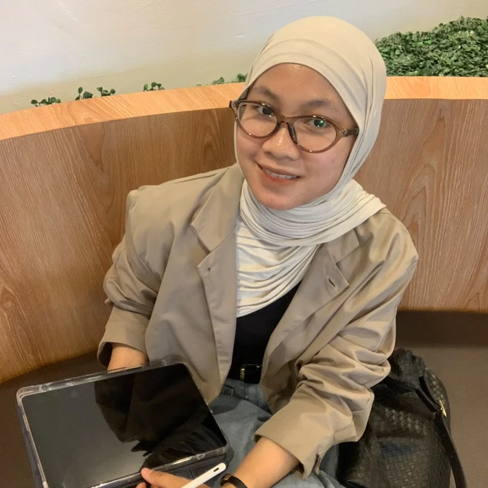

Bogor menurunkan hujan. Saya menuliskan tanda tanya.
Saya menulis bukan karena sudah mempunyai semua jawaban, melainkan karena ada terlalu banyak hal yang layak dipertanyakan.

Saya Adinda Destiana Aisyah. Dari Bogor, saya menulis fiksi dan esai, terutama tentang kehidupan perempuan. Saya sering kembali pada pertanyaan yang sama: mengapa perempuan masih harus menjelaskan pilihan hidupnya, seolah-olah kebebasan adalah sesuatu yang diberikan orang lain?
Fiksi memungkinkan saya memasuki kehidupan yang bukan milik saya. Di dalam rekaan, perempuan bisa menjadi tokoh yang rumit, keliru, berani, atau ragu tanpa harus selalu dipaksa menjadi teladan. Esai memberi saya cara lain untuk mendekati kenyataan: memeriksa kebiasaan, menantang prasangka, dan mempertanyakan siapa yang diuntungkan ketika ketidakadilan dianggap wajar.
Sejumlah tulisan saya telah terbit di media digital. Saya membangun ruang ini untuk menghimpun jejak tersebut dan memberi tempat bagi karya-karya yang akan datang. Saya tidak ingin semua pembaca bersepakat dengan saya. Jika satu cerita atau satu esai membuat kita meninjau kembali sesuatu yang selama ini dianggap lumrah, bagi saya, percakapan sudah dimulai.
Baca karya saya →